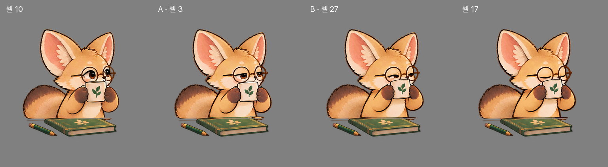
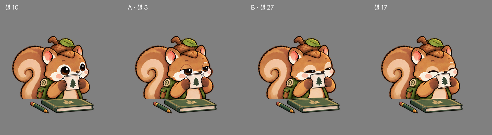

마시는 순간 · 새 연결 원화
다람쥐와 사막여우의 셀10과 마시는 자세 사이에 A·B를 넣고, 귀·등·꼬리를 고정했습니다.
왼쪽은 이전, 오른쪽은 이후입니다. 실제 앱 캡처 · 12fps · 22초 · 1배속. 사용자 기록은 변경하지 않았습니다.
사막여우
새5셀 고정 영역 변경0픽셀 · 경계48/60 · 선 굵기99~101%
셀10 → A → B →17 펼쳐 보기

다람쥐
새5셀 고정 영역 변경0픽셀 · 경계21/30 · 선 굵기99.1%
셀10 → A → B →17 펼쳐 보기

검수 결과
| 항목 | 사막여우 | 다람쥐 |
|---|
| 컵 윗면 0→10→A→B→17 | 280→225→225→217→217 | 303→262→257→256→255 |
| 한 컷 최대 변화 · RGB차이>15 | 19,439 | 12,307 |
| 한 컷 최대 변화 · RGB차이>0 | 41,749 | 25,445 |
동일한 캡처·계산에서 랫서팬더는 차이>15일 때21,210, 차이>0일 때48,101픽셀입니다. 두 친구 모두 각각의 랫서팬더보다 작습니다. 요청서의 약21,600은 임계값이 없어서 0초과 기준으로 재현되지 않으며,21,600을0초과 절대 상한으로 적용하면 두 친구는 미달합니다.
Flutter 분석 문제 없음 · 전체111개 테스트 통과 · 다른8개 모드797프레임 완전 동일. 설치된 앱은 변경하지 않았습니다.